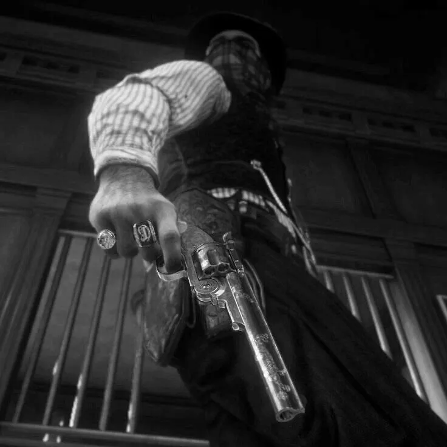
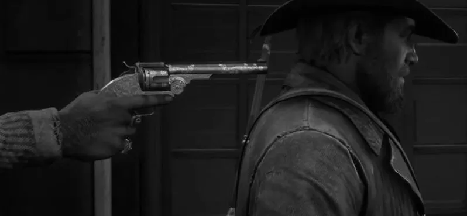

The Last Ride


 Dyin’ like a fool.
Dyin’ like a fool.


Cade studied him. Men like Clay didn’t offer things for free

The job had been too easy. A bounty, dead or alive, taken down without
much trouble.
The gold was stacked neatly in the saddlebags. cade sat by the fire,
Clay beside him, drinking from a flask.
cade: (leaning back, stretching his legs) "Feels good, don’t it? Bein’
on the right side of luck for once."
Clay: (nodding, smiling, but distant) "Yeah. Good as it gets."
cade didn’t notice how Clay’s hand tensed on his belt. The sound of
horses approaching made cade sit up.
Then—gunfire. Bullets ripped
through the quiet night, men shouting in the distance.
cade scrambled for his gun but felt a sharp pain tear through his
side.
He hit the dirt. Through blurry eyes, he saw men in badges—lawmen.
And standing beside them—Clay.

cade tried to reach for his gun, but Clay stepped forward. Clay:
(shaking his head, sighing) "Ain’t personal, cade.
You were worth more alive to me than that bounty."

cade wanted to laugh, but he could only choke on blood.
The cops moved in, but cade fought through the pain, grabbed his gun,
and fired.
He hit one, then another.
And then, somehow—he got to Dusty. He rode.
Hard. Fast.
Away from the betrayal, away from Clay. But he had already lost too much
blood.
Ain’t personal," he muttered, mocking Clay’s words
Funny thing about betrayal—never comes from an enemy
The saloon had been dark, the air thick with whiskey and sweat.
The man across from him had drawn first—but cade had drawn faster. A
gunshot.
The outlaw fell, eyes wide, a trickle of blood from his mouth.
cade had stood over him, staring at what he’d done.
The dead man’s fingers twitched,
as if grasping for life that had already left him.
cade had said nothing.
He had just picked up his drink and swallowed it down—but the
guilt never went away.
cade exhaled slowly, staring at the vast, indifferent sky. The wind had quieted, leaving only the sound of Dusty’s slow, steady steps. "A man makes choices, and choices make a man," he murmured. Ghosts stirred in his memory—faces lost to the years, men who never got to fire back. He had told himself it was survival. Now, with blood soaking his side, he wasn’t so sure. "How many lives did I steal," he whispered, "just ‘cause I was quicker on the draw?" The weight of it all settled in his bones. He loosened his grip on the reins, his voice barely more than a breath. "Maybe happiness ain’t about what you take," he said. "Maybe it’s about what you leave behind." And for the first time, he had nothing left to chase.
Maria’s voice lingered in his mind, softer than the wind but sharper
than any bullet he had ever taken.
He could still see her standing by
the fire, arms crossed, eyes full of something he never had the courage
to face. Back then, he had laughed at the idea of quitting. The road had
called to him, gold glittering just out of reach.
He had ridden off
without looking back, convinced the world owed him more than a quiet
life. Now, with the weight of years pressing heavy on his chest, he
finally understood. He let his eyes drift shut, the ranch just a blur on
the horizon. "Spent my whole life chasin’ things," he thought.
*"But in
the end, all a man really wants is to go home